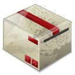

v1.0

Welcome to the RedSqaure documentation.
Introduction
RedSquare for Windows (95, 98, 2000/XP, Vista, 7)
Links
Website: http://www.plaatsoft.nl
Code: http://code.google.com/p/windows-redsquare
Credits
Documentation: wplaat
WishList
- Save highscore on internet
ReleaseNotes
11-10-2011 Version 1.0
- Maintenance release.
- Added QT Libraries 4.7.4
- RedSquare is build with QtCreator v2.3.0
20-03-2011 Version 0.80
- Added Intro3 screen with info about WarQuest.
- Added QT Libraries 4.7.2
- Bugfix: Highscores above 100 are not showed anymore.
- RedSquare is build with QtCreator v2.0.1
02-10-2010 Version 0.70
- Improve mouse red square navigation.
- Improve release notes screen.
- Refactor some C++ classes.
- Maintenance release.
- RedSquare is build with QtCreator v2.0.0
26-09-2010 Version 0.61
- Hotfix. Change logo image format from jpg to png.
- Now intro windows are working fine without QT installed.
- RedSquare is build with QtCreator v2.0.0
26-09-2010 Version 0.60
- Improve overal GUI layout.
- Release notes are loaded from internet
- Added second intro and release notes window.
- Added new version check.
- RedSquare is build with QtCreator v2.0.0
25-09-2010 Version 0.50
- Added high score window.
- High score is stored in xml file.
- Added game icon.
- RedSquare is build with QtCreator v2.0.0
23-09-2010 Version 0.40
- Added Main Menu window with animation blue squares.
- Added credits, donate, help window.
- Store window position on exit.
- Second official release.
- RedSquare is build with QtCreator v2.0.0
19-09-2010 Version 0.30
- Added sound effects.
- RedSquare is build with QtCreator v2.0.0
18-09-2010 Version 0.20
- Added square collision detection
- Improve GUI layout.
- Added game over screen.
- Added mouse click detection.
- First official release.
- RedSquare is build with QtCreator v2.0.0
17-09-2010 Version 0.10
- Start building.
- Created basic game board with border, etc.
- Added moving blue squares.
- Added Windows setup file.
- Added source code to Google Code repository.
- Added QT library 4.7.0.
- RedSquare is build with QtCreator v2.0.0